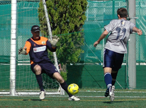

|
YCAC, Sunday 11th October.
Although it is too early in the season to read too much into league positions, YCAC 2`s versus Panthers pitched the undefeated league leaders against a YCAC team yet to get off the mark. And a good game it turned out to be - 5 goals, 2 red cards, and 1 controversial winner in extra time.
Panthers were on top for the first 20 and must have been left scratching their heads at being 2 goals down at the end of the first quarter. Classic counter-attacking and a bit of hesitation in the Panthers defence led to goals from Neil Shonhard and Matt Wallace, I think in both cases following great forward play from Andy Chambers. Towards the end of the 2nd half Panthers did what they had been trying to do all game - free their quick no 9 with a through ball over the top, who finished very neatly.
The referee whistled for the end of the 1st half early - and was persuaded after some difficulty that he hadn`t played the required 40 minutes. The teams then came back on and after some minutes of play the referee blew again for half-time. Cue mass protestations from Panthers, following which the referee seemed inclined to RE-re-start the 1st half. YCAC were not happy to re-start again, rightly thinking that this was becoming something of a farce. Many things in life are negotiable, but I don`t think the referees timekeeping should be (unless you are SAF). Anyhoo, it would then appear that the referee had decided to add some time on to the 2nd half, but exactly how much time and who from the YCAC had been informed of this decision seems extremely cloudy.
Having been subbed at half-time your author was then given the flag for the 2nd half. Play kicked off at 10.58 - I made a note of it and even checked with a Panthers sub that he agreed. Panthers continued to press for an equaliser but Danny Rawlings in goal and the defence marshalled by Simon Carden contrived to keep them out for 30 minutes or so. YCAC`s Karle Hahne had one good opportunity to increase our lead - made great contact but unfortuanely blazed over
But Panthers pressure was beginning to tell and when their striker was given space to line up a shot from 25 yards it flew into the top corner. Great goal. The two red cards which followed shortly afterwards were a wee bit harsh I felt - just a bit of a coming together between centre-half and centre-forward, a couple of yellows might have been more appropriate. The extra space generated by the removal of 2 players definitely helped Panthers more as the younger and fitter team.
And it was pretty obvious that a winner was on the cards as YCAC tended to sit back - but did it have to come in the 46th minute of the 2nd half? Exactly how long did the whole match last for? Not sure anyone really knew, but it was certainly closer to 85 minutes than 80 - no doubt the referee wanted to err on the side of caution after the 1st half and ended up over-compensating.
However enough clock-watching - additional time added on inevitably favours the attacking side and that is what happened. We`d prefer to take away the positives - best performance so far this season from YCAC 2nds, a great team effort which on any other day will produce points.
Report by Steve McKie
|